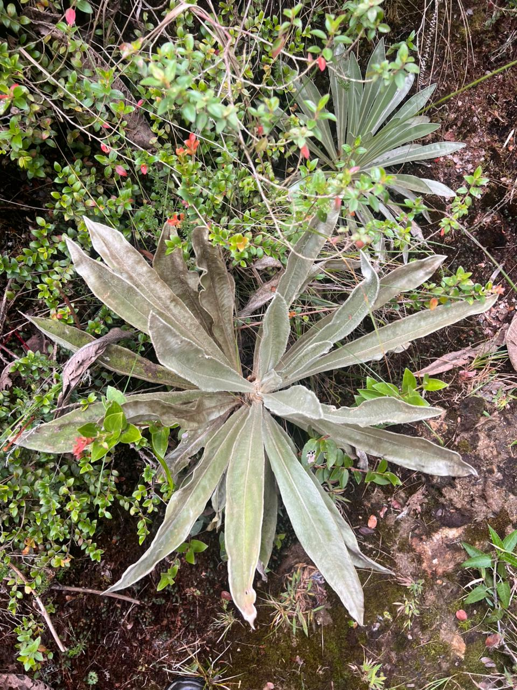
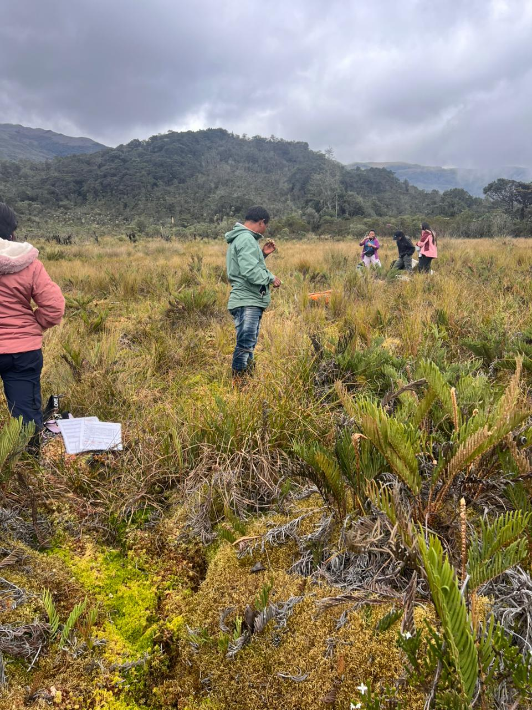
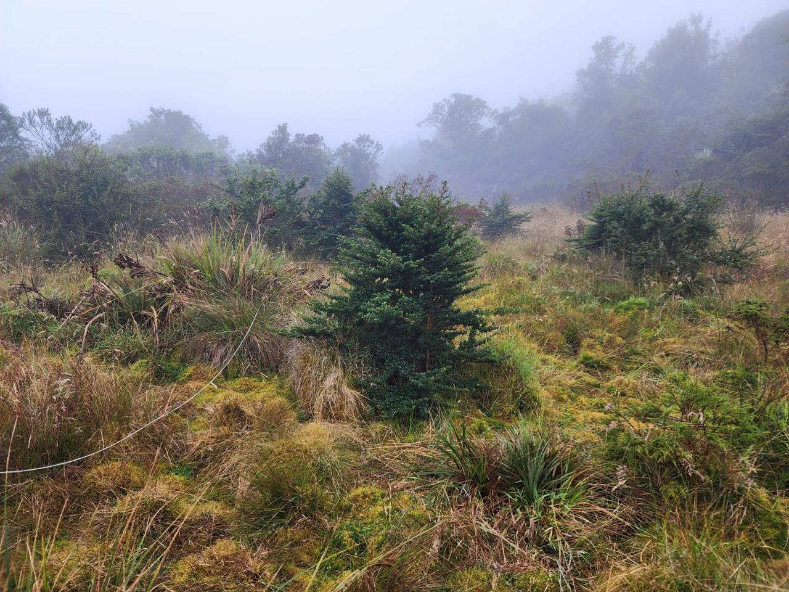
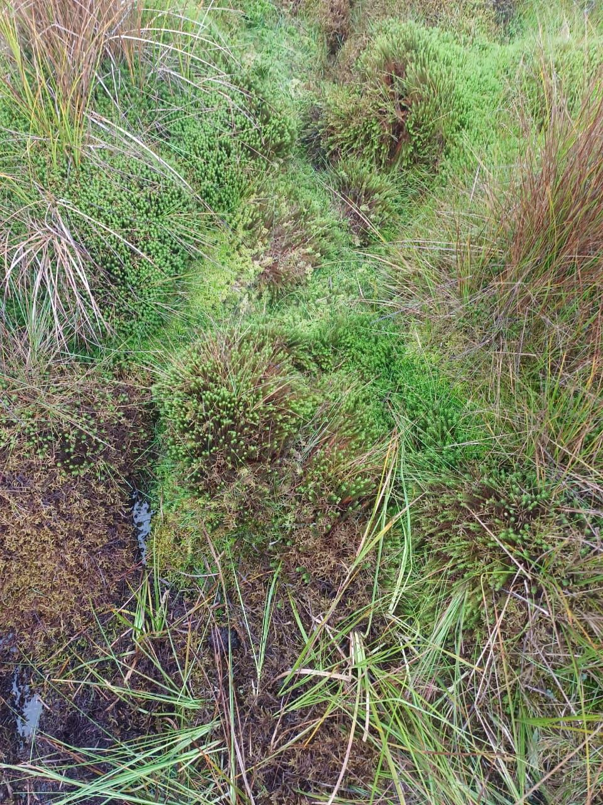

Diccionario
Consulta conceptos, metodologías, variables ambientales y términos clave del proyecto COLFLUX.
Consulta de información, datos y gráficas de carbono
Plataforma básica para consultar información tipo wiki, visualizar datos ambientales y explorar gráficas relacionadas con flujos de carbono en ecosistemas estratégicos.



